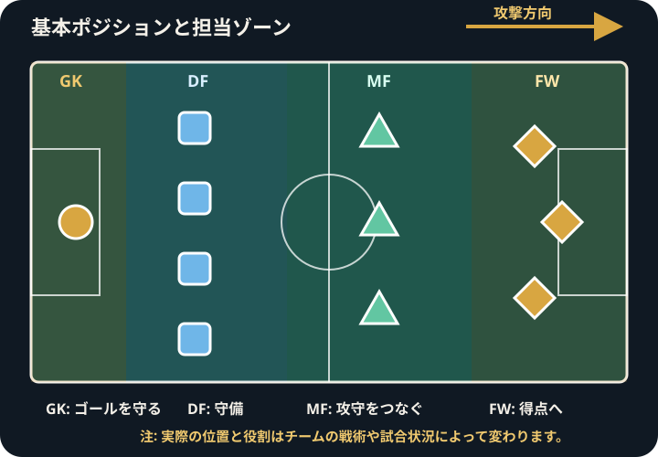

Football Positions Guide
サッカーのポジション一覧｜役割と特徴を初心者向けに解説
サッカーのポジションは、選手が主に担当するエリアや役割を分かりやすく整理するための呼び方です。同じ名称でも、チーム、監督、戦術、試合状況によって求められる仕事は変わります。
サッカーのポジションの全体像
基本的には、ゴールを守るゴールキーパー、その前で守備を担うディフェンダー、攻守をつなぐミッドフィールダー、得点に近い位置でプレーするフォワードに分けられます。
ただし、実際の試合では選手が広い範囲を動きます。ポジションは立ち続ける場所ではなく、チームの中で優先して担う役割を理解するための目安です。

ゴールキーパー
ゴールキーパーは自陣のペナルティーエリア内で手を使うことができ、シュートを防ぐ役割を担います。クロスへの対応、味方への指示、パスの出し手として攻撃を始める仕事も重要です。
チームによってはゴールから離れて守備範囲を広げることもありますが、どこまで前へ出るかは戦術や試合状況によって変わります。
ディフェンダー
ディフェンダーは、相手の攻撃を止め、自陣のゴールを守ることを主な役割とする選手です。中央を守る選手と両サイドを守る選手では、立つ位置や攻撃への参加方法が異なります。
センターバック
センターバックは守備陣の中央に位置し、相手フォワードへの対応、シュートやパスコースの制限、空中のボールへの対応などを行います。味方の位置を整えたり、後方からパスをつないだりする役割もあります。
2人で並ぶ場合も3人で並ぶ場合もあり、それぞれの選手が前へ出るかカバーに回るかは、チームの決まり方によって変わります。
サイドバックとウイングバック
サイドバックは守備ラインの左右に位置し、相手のサイド攻撃への対応を中心に、前方へのサポートやクロスにも関わります。ウイングバックは一般に、サイドバックより高い位置や広い範囲を担当する呼び方として使われます。
両者の境界は絶対的ではありません。同じ選手でも、フォーメーションやボールを持っているかどうかによって、サイドバックのようにもウイングバックのようにも動くことがあります。
ミッドフィールダー
ミッドフィールダーは、守備側と攻撃側の間でボールを運び、パスをつなぎ、相手の攻撃を止める役割を担います。試合の流れに関わる仕事が多く、チームの戦い方によって担当範囲も大きく変わります。
守備的・中央・攻撃的ミッドフィールダー
- 守備的ミッドフィールダー: ディフェンダーの前で相手の攻撃を止め、後方からパスをつなぐ役割を担うことが多い
- 中央ミッドフィールダー: 攻守の両方に関わり、ボールの移動や味方のサポートを行うことが多い
- 攻撃的ミッドフィールダー: 相手ゴールに近い中央で、決定的なパスやシュートに関わることが多い
これらは役割を理解するための一般的な分類です。1人が複数の仕事を担うことも多く、名称だけで動き方が決まるわけではありません。
フォワード
フォワードは相手ゴールに近い位置でプレーし、得点や得点機会の創出に関わる選手です。シュートだけでなく、パスを受けて味方を前進させる、相手の守備を引きつける、前線から守備を始めるといった仕事もあります。
センターフォワード・ストライカー・ウイング
- センターフォワード: 前線中央を基準に、ボールを収めたりゴール前へ入ったりする役割を示すことが多い
- ストライカー: 得点を期待される選手を表す呼び方として使われることが多く、センターフォワードと重なる場合もある
- ウイング: 前線の左右を基準に、ドリブル、クロス、中央への進入などで攻撃に関わることが多い
ウイングをミッドフィールダーに分類するチームもあり、各名称に世界共通の一つだけの役割があるわけではありません。
背番号とポジションは必ず一致するわけではない
背番号には歴史的にポジションと結び付いたイメージがありますが、現在は選手が好みや登録状況に合わせて番号を選ぶこともあります。背番号だけでポジションを断定せず、実際の立ち位置や動きを見ることが大切です。
チームや戦術によって役割は変わる
同じポジション名でも、ボールを持つ時間、守備の方法、味方との組み合わせによって役割は変化します。試合中の交代や得点状況に応じて、選手が別のポジションへ移ることもあります。
ポジション名を絶対的な定義として覚えるより、「どのエリアを使い、誰を助け、どの仕事を優先しているか」を見ると理解しやすくなります。
観戦時のポジションの見分け方
- 試合開始直後やゴールキック時に、選手が並ぶ基本位置を見る
- ボールを持っているときと失ったときで、立ち位置がどう変わるかを見る
- 中央とサイドのどちらを主に使っているか確認する
- 攻撃参加の後に、誰が空いた場所をカバーしているかを見る